Prima di ogni utilizzo necessita controllare l’integrità, la perfetta funzionalità e la pulizia di tutti i componenti del trabattello.
In particolare bisogna verificare che:
le ruote, originali e idonee all’uso, non siano danneggiate, girino adeguatamente, siano lubrificate ed il meccanismo del freno perfettamente funzionante;
l’erezione del trabattello non venga ostacolata, soprattutto nella sua estensione, da corpi fuori sagoma e strutture, quali grondaie, balconi a sbalzo, cavi sospesi etc.;
vi siano tutti gli elementi originali del trabattello.
Occorre inoltre controllare che:
la superficie sulla quale si vuole erigere il trabattello sia ben livellata, non cedevole e idonea a sopportare il peso della struttura con il massimo carico;
gli elementi NON presentino deformazioni o ammaccature;
il telaio dei piani di lavoro sia perfetto e i pannelli di legno ben fissati. Gli elementi di fissaggio siano intatti e le regolazioni degli stabilizzatori funzionanti e lubrificate.
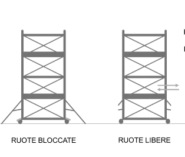
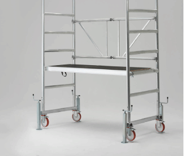
Non devono essere utilizzati componenti danneggiati:
parti mancanti o danneggiate dovranno essere sostituite;
deve essere montato da almeno due persone, utilizzando sempre i DPI previsti;
NON possono essere montati trabattelli in prossimità di linee elettriche ad una distanza inferiore a 5 metri dalle linee stesse.
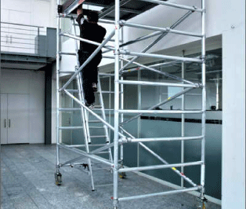
Smontaggio
Lo smontaggio del trabattello deve essere eseguito in sequenza inversa a quella indicata nelle istruzioni di montaggio.
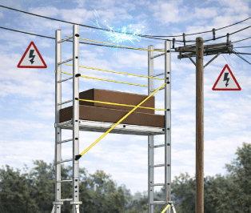
TRABATTELLO
Comportamenti sicuri
BLOCCARE sempre le ruote prima di ogni lavoro sul trabattello.
Usare un aggancio basso per lavori in trattenuta.
PER SPOSTARE IL TRABATTELLO, BISOGNA:
sbloccare il pedale del freno delle ruote sollevandolo verso l’alto, in modo che le ruote stesse possano essere libere nel movimento;
sbloccare gli staffoni e sollevarli da terra bloccandoli ad un’altezza che possa consentire il libero movimento.
Gli spostamenti possono avvenire solo in direzione longitudinale o diagonale di pianta.
Con un allargamento unilaterale della base e un sostegno parete, lo spostamento è ammesso solo se seguito parallelamente alla parete.
I trabattelli possono essere spostati solo manualmente e solo su superfici compatte, lisce e prive di ostacoli.
Durante lo spostamento sul trabattello non si devono trovare su esso persone o cose; inoltre, non ci devono essere persone nel raggio pari ad una volta e mezza l’altezza del trabattello stesso.
E’ da evitare ogni urto destabilizzante, quindi si presti attenzione agli ostacoli in terra ed in aria.
Dopo ogni spostamento è obbligatorio frenare, stabilizzare il trabattello e verificarne la perfetta verticalità e ricollocare gli staffoni nella posizione di utilizzo.
Verificare che nella zona sottostante non siano presenti persone che potrebbero essere colpite dalla caduta accidentale di oggetti o materiali.
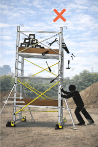
è severamente vietato gettare gli elementi metallici dal trabattello.
TRABATTELLO
Procedure di sicurezza
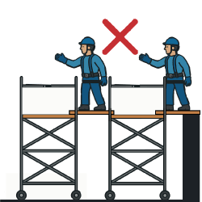
Non creare ponti tra torri o altre strutture.
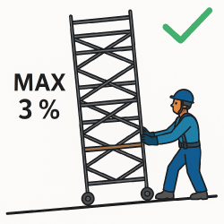
3% Massima inclinazione al movimento
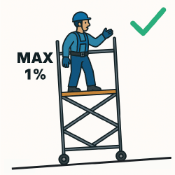
1% Massima inclinazione al lavoro
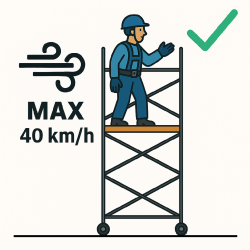
Stazionamento sulla torre consentito fino a 40 km/h di vento massimo.
Distanza massima tra piattaforme è 2,25 m.
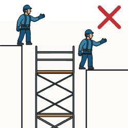
Non utilizzare la torre per l'accesso e l'uscita su altre strutture.
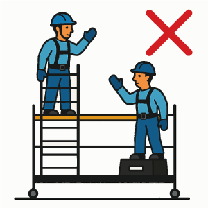
Non utilizzare scale, scatole o altri oggetti per guadagnare altezza extra.
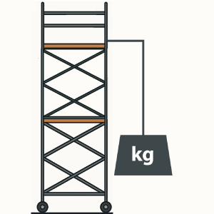
Non sollevare oggetti pesanti dalla torre.
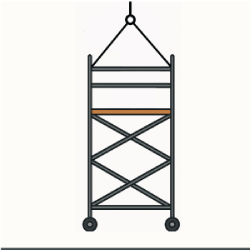
Non sollevare la torre.
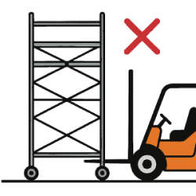
Non sollevare la torre con mezzi meccanici.
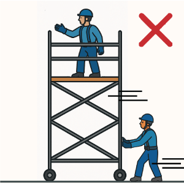
Non spostare la torre con persone o materiali su di esso.